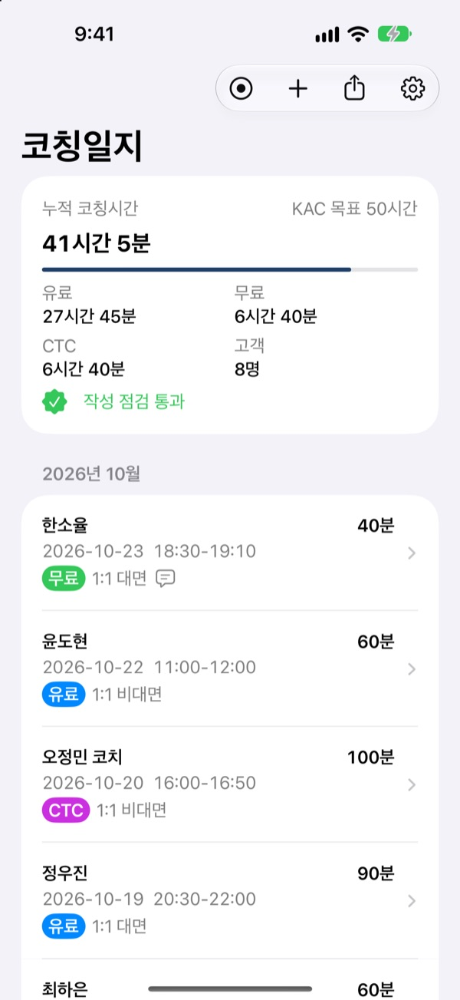
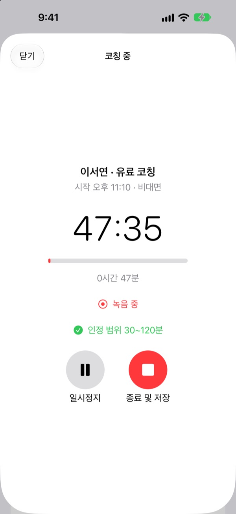
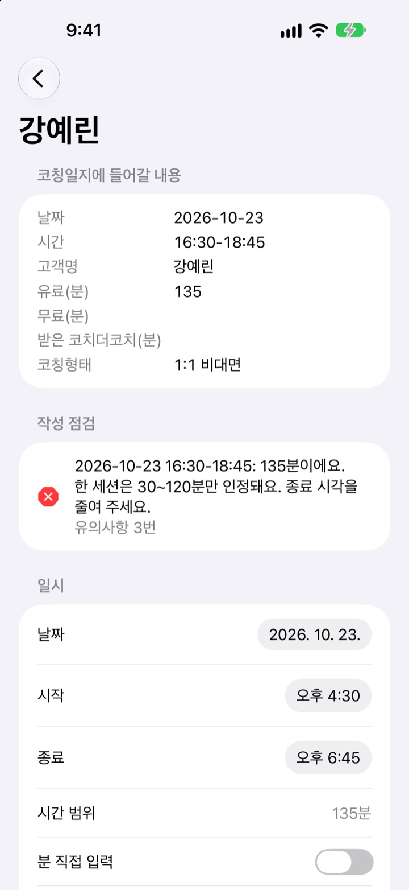
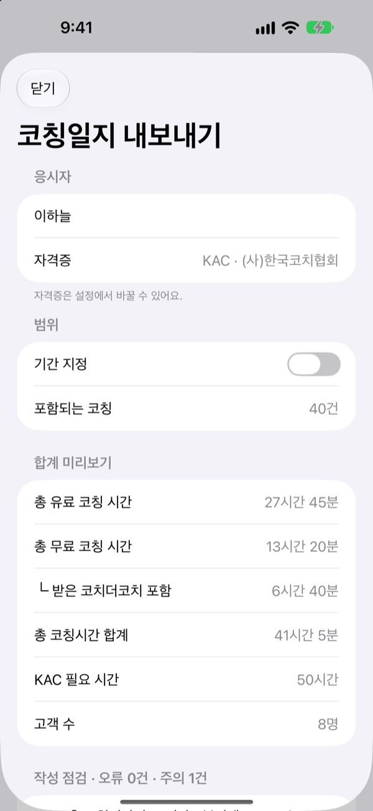

녹음하면
코칭일지가 완성돼요
시작부터 종료까지 날짜, 시각, 분이 기록되고 대화는 텍스트로 바뀌어요. 준비 중인 자격증의 작성 규칙으로 점검한 뒤 제출용 파일로 바로 내보내요.
모든 기능이 무료예요. iPhone, iPad, Mac에서 쓸 수 있어요.

작성 점검을 해 보세요
예시 코칭일지에 일부러 틀린 기록을 넣어 두었어요. 빨간 표시를 고치거나 지우고, 자격증을 바꿔 규칙이 어떻게 달라지는지 보세요.
코칭보다 일지 정리가 더 오래 걸리나요?
세션이 끝나면 시작과 종료 시각을 옮겨 적고, 분을 계산하고, 같은 날 같은 고객을 몇 번 만났는지 다시 세요. 제출 직전에야 135분짜리 세션과 25분짜리 세션이 눈에 들어와요. 코칭일지는 녹음 버튼 하나로 기록을 남기고, 협회 작성 규칙으로 미리 점검해 줘요.
녹음 버튼이 시간을 적어요
시작을 누른 순간이 시작 시각, 종료를 누른 순간이 종료 시각이 돼요. 전화가 오면 일시정지되고, 잠금 화면에서도 녹음이 이어져요. 고객이 녹음에 동의하지 않았다면 타이머로 시간만 남겨요.
iOS 26과 macOS 26부터는 대화가 기기 안에서 텍스트로 바뀌고, 문장을 누르면 그 부분부터 다시 들을 수 있어요.

제출 전에 탈락할 기록을 찾아요
세션 30~120분, 같은 날 같은 고객 2회와 합산 120분, 코치더코치 2배 계산, 그룹코칭 1:9, 시간 겹침, 교육 시작일 이전 코칭까지 확인해요. 문제가 있는 기록에는 빨간 표시가 붙고 무엇이 틀렸는지 알려 줘요.
넘친 시간은 버튼 하나로 종료 시각을 맞춰 고쳐요.

버튼 한 번에 제출용 파일
한국코치협회 자격증은 공식 코칭일지 양식과 같은 서식의 엑셀 파일로, ICF 자격증은 ICF 코칭 로그 칸 순서의 CSV 파일로 저장해요. 날짜순 정렬과 시간·분 합계도 채워져요.
지난 코칭은 엑셀 칸 순서대로 직접 입력하거나, Zoom이나 음성 메모로 녹음한 파일을 가져와 기록으로 만들어요.

세 단계면 제출할 코칭일지가 준비돼요
- 1
자격증 고르기
설정에서 준비 중인 자격증과 응시자 명, 교육 시작일을 입력해요.
- 2
코칭 녹음
고객 이름과 유료·무료를 고르고 시작, 끝나면 종료를 눌러요.
- 3
점검하고 내보내기
빨간 표시를 고친 뒤 엑셀이나 CSV로 저장해 공유해요.
자격증별 기준
- KAC · (사)한국코치협회
- 교육 20시간, 실습 50시간 (CTC 최대 25시간), 고객 3명 이상
- KPC · (사)한국코치협회
- 교육 60시간, 실습 200시간 (CTC 최대 80시간), 멘토코칭 5시간, 코치더코치 5시간
- KSC · (사)한국코치협회
- 교육 150시간, 실습 800시간 (CTC 최대 100시간), 멘토코칭 10시간, 코치더코치 10시간
- ACC · 국제코칭연맹(ICF)
- 교육 60시간, 실습 100시간 (유료 75시간 이상), 멘토코칭 10시간, 고객 8명 이상
- PCC · 국제코칭연맹(ICF)
- 교육 125시간, 실습 500시간 (유료 450시간 이상), 멘토코칭 10시간, 고객 25명 이상
- MCC · 국제코칭연맹(ICF)
- 교육 200시간, 실습 2500시간 (유료 2250시간 이상), 멘토코칭 10시간, 고객 35명 이상
설정에서 자격증을 고르면 목표 시간과 점검 규칙, 내보내는 파일 형식이 바뀌어요. 응시 요건은 바뀔 수 있으니 응시 전에 각 협회의 최신 안내를 확인해 주세요. 이 앱은 한국코치협회나 국제코칭연맹이 만든 앱이 아니에요.
모든 기능이 무료예요
무료
- 코칭 녹음과 타이머
- 기기 안에서 텍스트 변환
- 자격증별 작성 점검
- 엑셀 · CSV 내보내기
- 직접 입력과 오디오 가져오기
- Face ID 앱 잠금
개발자 응원하기
- 설정에서 작은 팁을 보낼 수 있어요
- 팁을 보내도 새로 열리는 기능은 없어요
구독이 아니라 보낼 때마다 한 번 결제해요.
광고도, 가입도 없어요.
자주 묻는 질문
준비 중인 자격증은 어디서 바꾸나요?
설정에서 KAC, KPC, KSC, ACC, PCC, MCC 중에서 고를 수 있어요. 목표 시간과 작성 점검 규칙, 내보내기 파일 형식이 자격증에 맞춰 바뀌어요.
녹음하지 않고 시간만 기록할 수 있나요?
네. 고객이 녹음에 동의하지 않았다면 타이머로 시작과 종료 시각만 기록할 수 있어요. 녹음은 고객의 동의를 받은 경우에만 써 주세요.
지난 코칭은 어떻게 넣나요?
목록 위의 더하기 버튼에서 직접 입력하거나, Zoom이나 음성 메모로 녹음한 오디오 파일을 가져와 기록으로 만들 수 있어요.
텍스트 변환이 되지 않아요.
iOS 26과 macOS 26 이상에서는 기기 안에서 변환해요. 이전 버전에서는 설정의 음성 인식 옵션을 확인해 주세요. ‘기기 내 인식만 사용’을 켜 두면 기기에서 지원하지 않는 경우 변환되지 않을 수 있어요.
빨간 표시는 무엇인가요?
한국코치협회 코칭일지 작성 유의사항이나 ICF 기준에 맞지 않는 기록이에요. 기록을 열면 무엇이 문제인지 알려 주고, 넘친 시간은 한 번에 고칠 수 있어요. 코칭교육 중에 한 실습(유의사항 5번)은 앱이 알 수 없으니 직접 빼 주세요.
제출할 파일은 어떻게 만드나요?
공유 버튼을 누르면 한국코치협회 자격증은 엑셀 파일로, ICF 자격증은 CSV 파일로 저장돼요. 작성 오류가 있으면 먼저 고친 뒤 내보내 주세요.
기록은 어디에 저장되나요?
모든 기록과 녹음은 이 기기에만 저장되고, 개발자는 볼 수 없어요. 앱은 어떤 정보도 수집하지 않아요. 앱을 삭제하면 기록도 함께 지워지니 필요한 기록은 먼저 내보내 보관해 주세요.
앱 잠금을 켜고 싶어요.
설정의 ‘개인정보 보호 (앱 잠금)’을 켜면 앱을 열 때마다 Face ID, Touch ID나 기기 암호로 잠금을 해제해요. 앱 전환 화면에서도 내용이 가려져요.
어떤 기기에서 쓸 수 있나요?
iOS 17 이상의 iPhone과 iPad, macOS 14 이상의 Mac에서 쓸 수 있어요. 기기 안 텍스트 변환은 iOS 26, macOS 26부터예요.
문의는 어디로 하나요?
leeo@kakao.com으로 메일을 보내거나 GitHub의 M1zz/KACCoachingLog 이슈에 남겨 주세요. 고객 이름이나 녹음 내용은 올리지 말아 주세요.
궁금한 점이나 의견은 leeo@kakao.com로 보내 주세요.